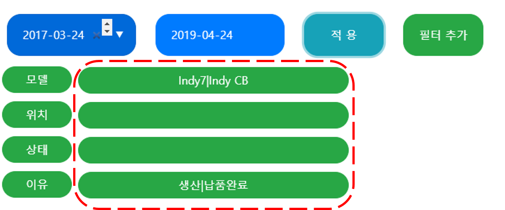

1: 다른 페이지로 넘어가는 버튼 입니다.
2: 멀티 필터링 역할을 하는 버튼입니다. 필터를 설정하고, 적용 버튼을 눌러야 합니다.
3: 간단하게 사용할 수 있는 필터링 입니다. 엔터 또는 5번의 돋보기를 클릭 해야 합니다.
4: 데이터를 추가하는 창으로 변경합니다. 기본 값은 필터입니다.
5: 필터를 동작하는 돋보기와 필터 창을 비우는 버튼입니다.
6: 데이터를 수정하는 버튼과 삭제하는 버튼입니다.
7: 이력 추적을 확인할 수 있는 버튼입니다.

필터 추가를 누르게 되면 아래 텍스트 박스가 추가로 화면에 나타납니다.
입력 조건은 대소문자와 공백을 고려해야합니다.
동시에 여러가지 조건을 하기 위해서는 특수문자 ( | )를 사용합니다
특수문자 (|)는 ( \ + Shift ) 통해 입력할 수 있습니다.
조건을 입력한 후에 적용 버튼을 눌러야 동작합니다.